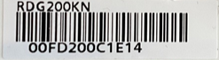
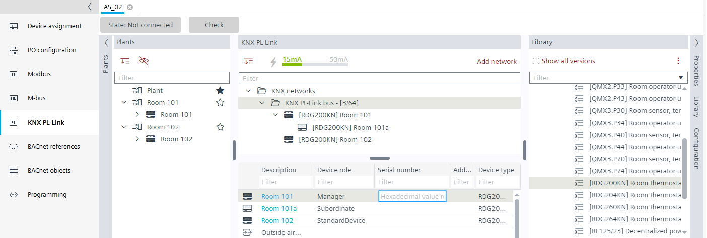

将序列号添加到设备（离线）
手动添加序列号或使用条形码读取器以提高效率。序列号和条形码可在设备或设备包装上找到。
Note：分配设备地址时，如果 QR 代码粘在平面图上，这会非常有帮助。这意味着您可以简单地使用条形码阅读器将 QR 代码传输到相应设备的序列号字段中。
- The serial number is available as text on paper or as a QR code label.

- (Optional) A barcode reader is installed and operable.
- In the KNX PL-Link area, select the KNX PL-Link bus.
- Select the first RDG2 device in the table view.
- Select the Serial number column and enter the serial number (hexadecimal value) or use a barcode reader.

- Select the next RDG2 device in the table view.
- Select the Serial number column and enter the serial number (hexadecimal value) or use a barcode reader.
- Continue the procedure for all devices.